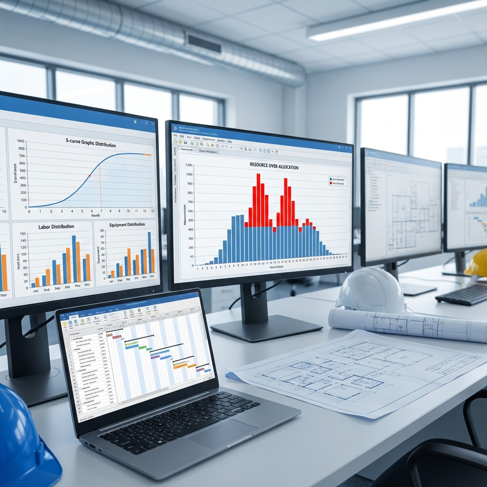

👷 What is Resource Loading?
Resource loading is the process of assigning resources (labor, equipment, materials) to schedule activities to determine daily, weekly, and monthly requirements for each resource.
📊 Resource Types
| Type | Description | Examples |
|---|---|---|
| Labor | Workforce and manpower | Carpenter, welder, laborer |
| Equipment | Machines and equipment | Crane, excavator, mixer |
| Material | Consumable materials | Concrete, steel, cement |
| Non-Labor | Non-human resources | Rent, insurance |
📈 Resource Histogram
Chart showing resource distribution over project duration:
- X-axis: Time (days/weeks/months)
- Y-axis: Resource quantity
- Red line: Maximum available limit
⚠️ Over-Allocation Problem
When demand for a resource exceeds available quantity:
- Demand > Availability = Problem!
- Shown in red in P6/MS Project
- Must be resolved before execution
⚖️ Resource Leveling
Process of adjusting schedule to resolve Over-Allocation:
Method 1: Delay Activities
Postpone activity to utilize available Float.
Method 2: Activity Splitting
Split activity into parts with interruptions.
Method 3: Add Resources
Add additional resources (higher cost).
Method 4: Overtime
Increase daily working hours.
🔧 Resource Leveling in P6
- Tools → Level Resources
- Select project(s)
- Set Leveling Options:
- Preserve Minimum Float
- Level Within Float
- Max Percent Overscheduled
- Click Level
- Review results
📊 Resource S-Curve
S-Curve shows cumulative resource distribution:
- Start: Slow (mobilization)
- Middle: Fast (peak production)
- End: Slow (finishing works)
💡 Practical Tips
- Level manually first before Automatic Leveling.
- Use Priority to control activity order.
- Account for holidays in calendar.
- Keep Baseline before Leveling.
- Review Leveling impact on Critical Path.
Read Also: Oracle Primavera P6: Complete Guide